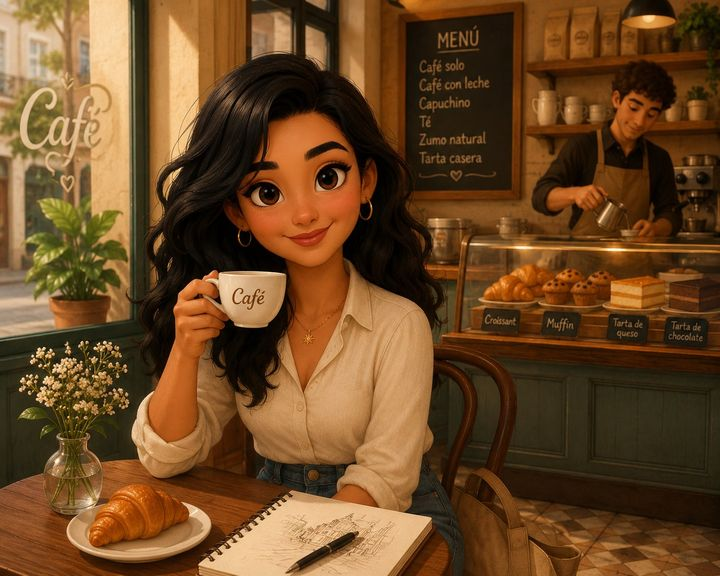
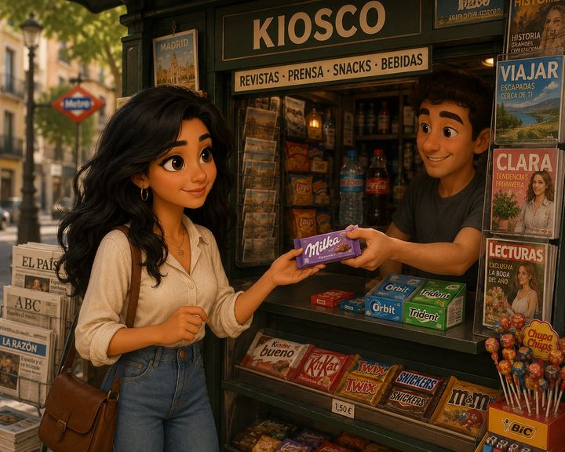
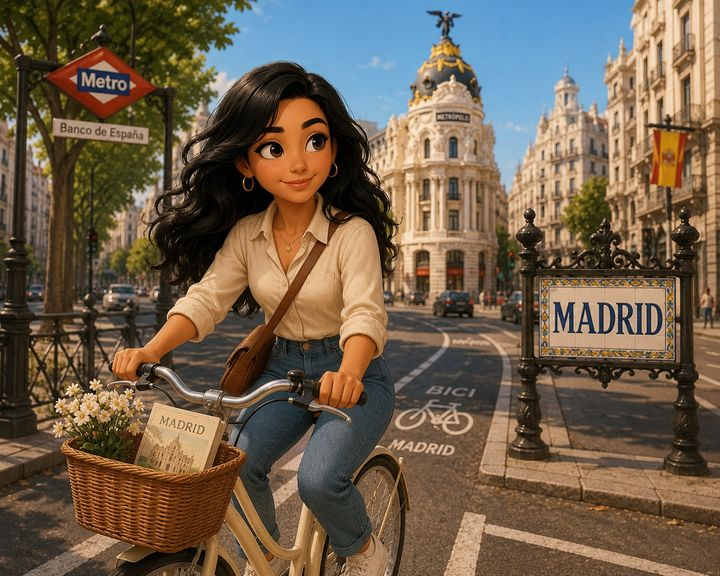
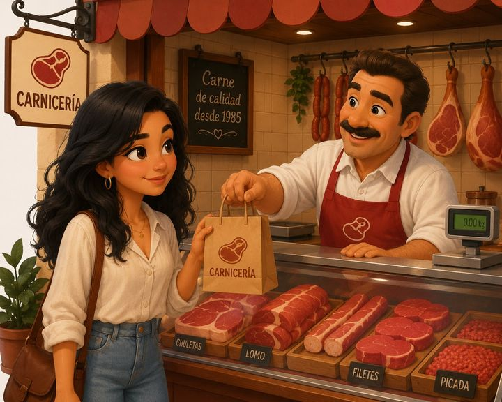
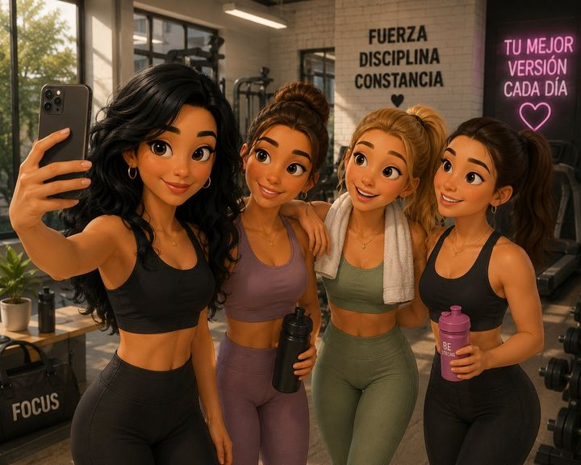

Día por día
☀️ LA SEMANA EN DETALLE

LUNES EN LA CAFETERÍA
✅ Siempre — todos los lunes
☕Por la mañana → Cafetería ⭐
🚇Transporte → Metro
💪Por la tarde → Gimnasio
🥦Al salir → Verdulería
RUTINALos lunes, Martina empieza la semana con energía: desayuna en la cafetería, va al trabajo en metro y termina el día en el gimnasio.
💬 PRESENTE INDICATIVO«Martina pide siempre un café con leche y un croissant — dice que es el mejor comienzo del día.»

MARTES EN EL KIOSCO
✅ Siempre — todos los martes
☕Por la mañana → Cafetería
📰De camino → Kiosco ⭐
🚇Transporte → Metro
🥖Al volver → Panadería
RUTINALos martes, Martina va para el kiosco de la esquina antes de tomar el metro — siempre compra el periódico y alguna golosina.
💬 PRESENTE INDICATIVO«Martina compra El País todos los martes — le encanta leerlo en el metro camino al trabajo.»

MIÉRCOLES EN BICICLETA
🔁 Siempre — todos los miércoles
☕Por la mañana → Cafetería
🚲Transporte → Bicicleta ⭐
💪Por la tarde → Gimnasio
🛒Al salir → Supermercado
RUTINALos miércoles es el día favorito de Martina — va al trabajo en bicicleta por la bicisenda de la Gran Vía.
💬 PRESENTE INDICATIVO«Martina ama pedalear por Madrid — dice que desde la bicicleta la ciudad se ve diferente.»

JUEVES EN LA CARNICERÍA
🔁 A menudo — los jueves
🥐Por la mañana → Cafetería
🥩Al mediodía → Carnicería ⭐
🚇Transporte → Metro
🥦Por la tarde → Verdulería
RUTINALos jueves, Martina compra carne en la carnicería por la mañana y va a la verdulería por la tarde.
💬 PRESENTE INDICATIVO«Martina prepara milanesas con mucho cariño — ¡es su plato favorito de toda la semana!»

VIERNES EN EL GIMNASIO
✅ Siempre — todos los viernes
🐟Por la mañana → Pescadería ⭐
💪Por la tarde → Gimnasio ⭐
🎨Al salir → Clase de arte
🍻De noche → Bar con amigas
RUTINALos viernes, Martina va al gimnasio con sus amigas después del trabajo — es el entrenamiento más divertido de la semana.
💬 PRESENTE INDICATIVO«Martina hace spinning con sus amigas los viernes — después van juntas al bar a celebrar el fin de semana.»
SÁBADO EN LA HELADERÍA
🔁 A menudo — casi todos los sábados
🛒Por la mañana → Supermercado
🍦Al mediodía → Heladería ⭐
🎬Por la tarde → Cine
🚕De noche → Taxi a casa
RUTINALos sábados, Martina disfruta del tiempo libre — hace las compras, toma helado y va al cine con sus amigos.
💬 PRESENTE INDICATIVO«Martina pide siempre pistacho y chocolate — dice que la vida es mejor con un buen helado.»
DOMINGO EN EL PARQUE
✅ Siempre — todos los domingos
⛪Por la mañana → Iglesia
🚶A pie → Por el barrio
🌳Al mediodía → Parque del Retiro ⭐
👨👩👧Por la tarde → Familia
RUTINALos domingos, Martina descansa en el Parque del Retiro — lee, pasea y juega con su perro. Es su día favorito.
💬 PRESENTE INDICATIVO«Martina va siempre al Parque del Retiro los domingos — dice que es el pulmón verde de Madrid y su lugar de paz.»
Producción oral
🎯 AHORA HABLÁ DE VOS
Respondé en voz alta, aunque estés solo en casa. Grabate con el celular y escuchate después.
1
📍 Tu barrio¿Qué lugares hay cerca de tu casa? Mencioná 5.
2
🚌 ¿Cómo vas?Contá cómo te transportás: «Voy al supermercado en bicicleta…»
3
🔄 ¿Con qué frecuencia?Usá: siempre / a menudo / a veces / casi nunca / nunca
Los [día], yo voy a [lugar] en [transporte].
Voy [siempre / a veces / nunca] porque [razón].